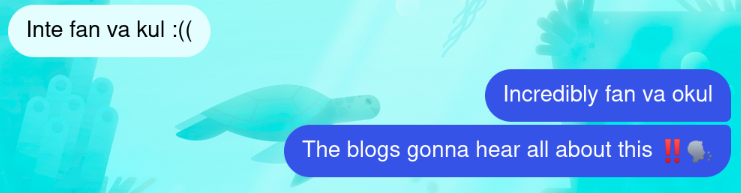

En kort Kanadaweekend
Jag blev utvisad ☠️ Resan började med tuppen 0630 på morgonen när flyget mot Amsterdam lyfte. Vi var framme 8:30 i Amsterdam och hade en 7 timmar mellanlandning innan planet mot Montreal skulle lyfta. Perfekt med tid för att åka in och utforska staden. Det första…
Continue reading...